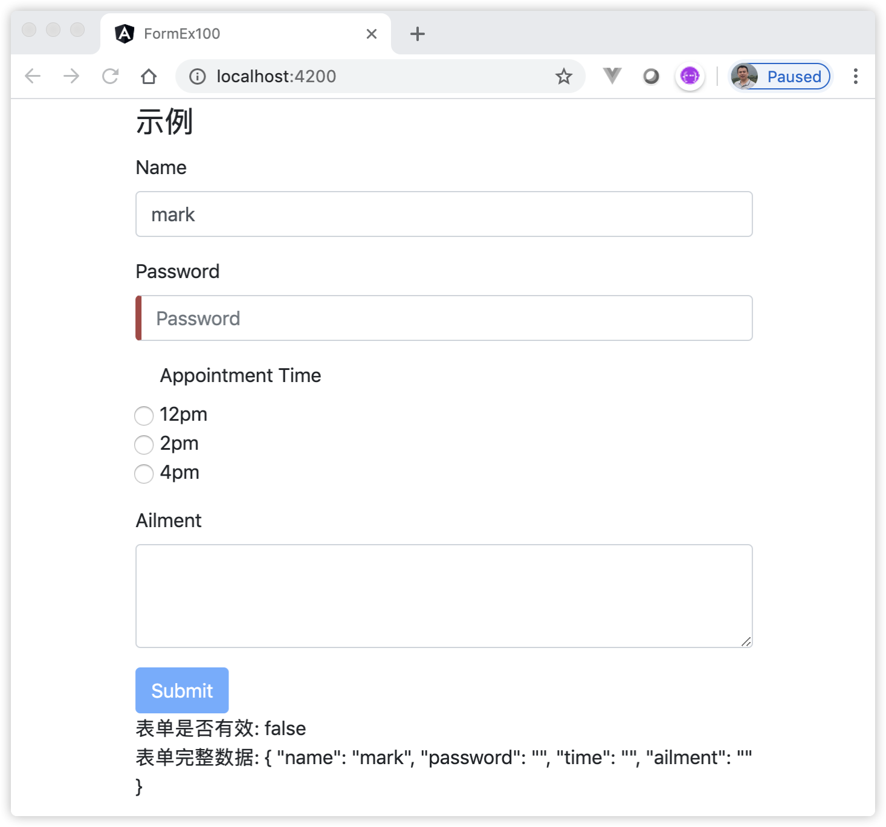
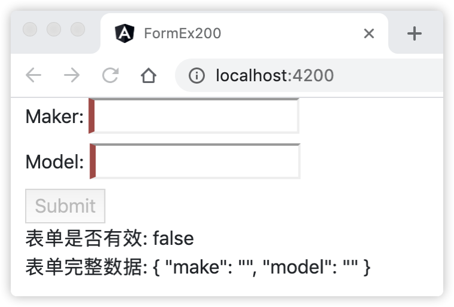

13 学习Angular表单知识¶
表单是Web应用程序的重要组成部分，用户通过表单与服务进行交互。Angular表单位于@angular/forms包中，本章将介绍Angular中表单幕后的工作方式以及如何使用它。
13.1 什么是Angular表单¶
用表单处理用户输入是许多常见应用的基础功能。应用通过表单来让用户登录、输入信息、修改个人资料以及执行各种数据输入任务。Angular表单从数据结构上分为视图层与模型层，在视图层，Angular处理用户与表单的交互；在模型层，Angular表单创建了专门的容器对象负责跟踪、处理和存储表单数据。Angular表单从类型上分为两种：模板驱动表单和响应式表单。两者都从视图中捕获用户输入事件、验证用户输入、创建表单模型、修改数据模型，并提供方法跟踪这些控件的更改。
模板驱动表单和响应式表单在处理方式，管理数据以及API方面都有很大不同，各有优势。
13.1.1 什么是模板驱动表单¶
模板驱动表单依赖FormsModule模块，主要是通过在模板中放置指令来创建表单。然后，使用数据绑定来获取该表格中的数据。
创建模板驱动表单，首先利用HTML标签构建页面，然后利用Angular的表单指令接管Form表单元素的控制权，最常见的如利用[(NgModel)]双向绑定的能力读写输入表单元素，利用required、maxlength等控制表单输入。通过Angular的表单指令与数据模型交互，可以完成诸如跟踪表单状态并对表单进行正确性校验，错误提示等功能，从而引导用户顺利提交表单。
模板驱动的表单侧重于视图层，逻辑代码在组件的模板中（HTML代码）完成。模板驱动表单专注于简单的场景，对表单模型的访问是异步的。使用模板驱动表单之前，需要从 @angular/forms 包中导入 FormsModule 模块，并把它添加到 NgModule 的 imports 数组中。
13.1.2 什么是响应式表单¶
响应式表单依赖ReactiveFormsModule模块，主要是通过在组件类中定义一个表单，然后将其绑定到模板中的元素。倾向于使用响应式编程来获取和输入数据，因此命名为“响应式”。
响应式表单侧重于模型层，逻辑代码在组件类中完成。这与模板驱动的形式不同，模板驱动的表单控制代码是在模板中完成的。 响应式表单很灵活，可用于处理各种复杂的表单方案。使用响应式表单需要编写更多的组件代码和较少的HTML代码，由于不需要依赖HTML模板的原因，因此响应式表单的单元测试更加容易。要使用响应式表单，需要从 @angular/forms 包中导入 ReactiveFormsModule 模块，并把它添加到 NgModule 的 imports 数组中。
响应式表单是围绕可观察对象的流构建的，其中表单输入和值作为输入值流提供，因此同时支持同步和异步的访问。
13.2 认识表单模型¶
响应式表单和模板驱动表单都是用表单模型来跟踪 Angular 表单和控件元素之间值的变化。
13.2.1 认识表单模型的容器¶
AbstractControl类是表单模型的容器，它负责存储表单模型数据的工作，主要表现在以下方面：
负责表单的初始化工作
执行表单的验证
处理和更新视图层UI的状态
跟踪表单控件的验证状态
AbstractControl容器是个抽象类，它在Angular表单里有3个子类，分别是：FormControl、FormGroup和FormArray。
FormControl 实例作为表单控件的最小单元，用于追踪表单的单个控件值和有效性的实体对象；
FormGroup 用于追踪一个表单控件组的值和状态；
FormArray 用于追踪表单控件数组的值和状态。
可以将AbstractControl容器视为一棵树，其中叶子始终将是FormControl实例，而其他2个对象（FormArray，FormGroup）可以被视为AbstractControl容器的枝，它们相当于一个子容器，必须包含一个FormControl实例。我们用一张图来形象的描述它们之间的关系，如图13-1所示：
// FG - FormGroup
// FA - FormArray
// FC - FormControl
FG
/ \
FC FG
/ \
FC FA
/ | \
FC FC FC
图13-1 Angular表单容器树
图13-1中的关系，可以用表单模板HTML表示如下：
<form> <!-- FG --> <input type="text" formControlName="companyName"> <!-- FC --> <ng-container formGroupName="personal"> <!-- FG --> <input type="text" formControlName="name"> <!-- FC --> <ng-container formArrayName="hobbies"> <!-- FA --> <input type="checkbox" formControlName="0"> <!-- FC --> <input type="checkbox" formControlName="1"> <!-- FC --> <input type="checkbox" formControlName="2"> <!-- FC --> </ng-container> </ng-container> </form>
关于上述代码中的formControlName、formGroupName和formArrayName指令将会在下面的章节介绍。
13.2.2 认识FormControl模型¶
FormControl类继承AbstractControl容器类，这意味着，它继承了AbstractControl类的所有功能，并实现了关于访问值、验证状态、用户交互和事件的大部分基本功能。FormControl实例仅与一个表单控件（一个DOM元素：<input>，<textarea>）或一个自定义组件组合在一起。FormControl作为AbstractControl树的叶子节点，它是完全独立的，它的有效性状态，值和用户交互不会影响到包含它的父级容器。
FormControl模型类的构造方法定义如下：
constructor( formState: any = null, validatorOrOpts?: ValidatorFn | AbstractControlOptions | ValidatorFn[], asyncValidator?: AsyncValidatorFn | AsyncValidatorFn[] )
在FormControl类的构造方法中，接受的3个不同参数说明如下：
formState参数可选，默认值是null，可以是任意类型的一个初始值；
validatorOrOpts参数可选，默认值是undefined，它的类型可以是一个同步验证器函数或其数组，或者一个包含验证函数和验证触发器的 AbstractControlOptions对象；
asyncValidator参数可选，默认值是undefined，它的类型可以是一个同步验证器函数或其数组。
下面的代码演示了使用不同的参数初始化FormControl实例：
export class ExampleComp { const control1 = new FormControl('Murphy'); // 用一个初始值初始化FormControl实例 const control2 = new FormControl({ value: 'n/a', disabled: true }); // 定义了初始值和禁用状态的对象初始化FormControl实例 const control3 = new FormControl('', Validators.required); // 使用一个同步验证器初始化FormControl实例 const control4 = new FormControl('', { updateOn: 'blur' }); // 配置该控件，使其在发生 blur 事件时更新值为空 }
13.2.3 认识FormArray容器模型¶
FormArray类也是继承AbstractControl容器类，它作为AbstractControl树中的子容器，将多个FormControl实例组合在一起。它还会根据其所有子控件的状态总结出自己的状态。比如，如果 FromArray 中的任何一个控件是无效的，那么整个数组也会变成无效的。从AbstractControl树的角度来看，FormArray实例作为树枝节点，必须包含至少一个叶子节点。FormArray实例的验证状态，有效性，是否获得焦点以及值等取决于其叶子节点。容器内控件的错误信息将会在FormArray实例节点的级别出现。FormArray实例的定义特征是将其子级存储在一个数组中。
FormArray容器类的构造方法定义如下：
constructor( controls: AbstractControl[], validatorOrOpts?: ValidatorFn | AbstractControlOptions | ValidatorFn[], asyncValidator?: AsyncValidatorFn | AsyncValidatorFn[] )
在FormArray类的构造方法中，接受的3个不同参数，除了第一个参数外，另外2个参数与FormControl类相同。controls参数接受一个子控件数组。在注册后，每个子控件都会有一个指定的索引。
下面的代码演示了使用不同的参数初始化FormArray实例：
export class ExampleComp { const arr1 = new FormArray([ // 创建表单控件的数组 new FormControl('Murphy', Validators.minLength(3)), new FormControl('Drew'), ]); const arr2 = new FormArray([ // 创建一个带有数组级验证器的表单数组 new FormControl('Murphy'), new FormControl('Drew') ], {validators: myValidator, asyncValidators: myAsyncValidator}); const arr3 = new FormArray([ // 为表单数组中的所有控件设置 updateOn 属性 new FormControl() ], {updateOn: 'blur'}); }
13.2.4 认识FormGroup容器模型¶
FormGroup实例与FormArray实例相同，不同的是将其包含的叶子节点存储在对象中。
FormGroup容器类的构造方法定义如下：
constructor( controls: { [key: string]: AbstractControl; }, validatorOrOpts?: ValidatorFn | AbstractControlOptions | ValidatorFn[], asyncValidator?: AsyncValidatorFn | AsyncValidatorFn[] )
FormGroup类的构造方法与FormArray类的构造方法类似，不同的是第一个参数的类型接受一组子控件对象，每个子控件的名字就是它注册时用的 key。
下面的代码演示了使用不同的参数初始化FormGroup实例：
export class ExampleComp { const form1 = new FormGroup({ // 创建一个带有两个控件的表单组 first: new FormControl('Murphy', Validators.minLength(2)), last: new FormControl('Drew'), }); const form2 = new FormGroup({ // 创建一个具有组级验证器的表单组 password: new FormControl('', Validators.minLength(2)), passwordConfirm: new FormControl('', Validators.minLength(2)), }, passwordMatchValidator); function passwordMatchValidator(g: FormGroup) { return g.get('password').value === g.get('passwordConfirm').value ? null : {'mismatch': true}; } const form3 = new FormGroup({ // 为表单组中的所有空间设置 updateOn 属性 one: new FormControl() }, { updateOn: 'blur' }); }
13.3 认识表单指令¶
Angular的表单指令的基类是AbstractControlDirective类，此类包含大量的getters方法，用来获取当前绑定表单控件的有效性、是否已触摸、验证状态等。它下面有很多个具体的实现类，它们的继承关系如下：
AbstractControlDirective ControlContainer AbstractFormGroupDirective NgModelGroup FormGroupName NgForm FormGroupDirective FormArrayName NgControl NgModel FormControlDirective FormControlName
AbstractControlDirective指令是其他所有指令的基类，我们可以这么理解，指令名以“Ng”开头是模板驱动表单相关的指令，其他的是响应式表单相关的指令。
在AbstractControlDirective和ControlValueAccessor的具体实现类的帮助下，模型中的控件与DOM元素进行绑定。因此，可以将AbstractControlDirective类视为ControlValueAccessor（视图层）与AbstractControl（模型层）连接的桥梁。如图13-2所示。
--------------------------
| ControlValueAccessor | <--- 视图层
--------------------------
| ▲
| |
▼ |
------------------------------
| AbstractControlDirective |
------------------------------
| ▲
| |
▼ |
-----------------
| FormControl | <--- 模型层
-----------------
图13-2 指令负责连接视图层与模型层
图13-2中箭头表示数据传入的方向，其中ControlValueAccessor是Angular表单数据访问器，将在下面章节介绍。
13.4 了解表单数据访问器¶
ControlValueAccessor是Angular表单数据访问器，用于在 Angular 的 FormControl 实例和原生 DOM 元素之间创建一个桥梁，ControlValueAccessor访问器会监听表单DOM元素（例如：<input>，<textarea>）上的事件，并立即把新值传给 FormControl 实例。
ControlValueAccessor访问器的定义如下：
interface ControlValueAccessor { writeValue(obj: any): void registerOnChange(fn: any): void registerOnTouched(fn: any): void setDisabledState(isDisabled: boolean)?: void }
writeValue()方法将新值写入元素。当调用模型类的赋值方法时，如FormControl.setValue()方法，访问器将会调用writeValue()方法，该方法的具体实现将会更新DOM元素的值，并且更新该控件的有效性；
registerOnChange()方法注册一个回调函数，只要用户界面中的值发生更改，该函数就会被调用，并将新值传播到模型中；
registerOnTouched()方法注册发生Touch事件时将调用的回调函数。此事件发生时，将通知模型实例执行一些更新；
setDisabledState()方法将根据提供的值禁用或启用DOM元素。通常由于更改模型而调用此方法。
Angular表单指令使用ControlValueAccessor的writeValue方法设置原生表单控件的值；使用registerOnChange方法来注册由每次原生表单控件值更新时触发的回调函数，用户需要把更新的值传给这个回调函数，这样对应的 Angular 表单控件值也会更新；使用registerOnTouched 方法来注册用户和控件交互时触发的回调。
Angular的内置数据访问器有7种，如下定义：
const BUILTIN_ACCESSORS = [ CheckboxControlValueAccessor DefaultValueAccessor NumberValueAccessor RadioControlValueAccessor RangeValueAccessor SelectControlValueAccessor SelectMultipleControlValueAccessor ];
Angular中不同的指令分别调用不同的内置数据访问器，这点对于普通用户是透明的，这些动作由指令自己完成，用户仅需要针对这些指令的规则配置好对应的数据即可。
这里，我们介绍其中的SelectControlValueAccessor访问器，在表单中使用下拉列表控件时，指令会调用这个访问器。
SelectControlValueAccessor访问器用于写入 select 控件的值，并监听 select 控件的变化。该访问器会被 FormControlDirective、FormControlName 和 NgModel 指令使用。下面我们通过实例代码演示select控件的用法。
import { Component } from '@angular/core'; @Component({ selector: 'app-select-examples', template: ` <h3>演示下拉列表</h3> <form> <select #f [(ngModel)]="crtUserId" name="user"> <option *ngFor="let user of users" [value]="user.id" > {{ user.name }} </option> </select> </form> <p> 选择的值: {{ f.value }} </p> ` }) export class SelectExamplesComp { users = [ { id: 1, name: 'Andrei' }, { id: 2, name: 'Murphy' }, { id: 3, name: 'Jane' }, { id: 4, name: 'Another Name' }, ]; crtUserId = this.users[0].id; }
上述代码中，完成了以下内容：
#f 表示将select控件导出到本地模板变量f中，事后可以通过引用该变量打印select控件的信息；
[(ngModel)]=”crtUserId” 表示通过ngModel指令将select控件与变量crtUserId进行双向绑定，这里幕后，ngModel指令通过控件的类型（select控件），选择对应的数据访问器（SelectControlValueAccessor访问器），调用访问器相应的方式，处理控件和数据的绑定工作；
在<option>元素中使用ngFor指令遍历users数据，通过DOM属性绑定语法：[value]=”user.id”，将元素的value值与user的id进行绑定。
关于ngModel指令的知识，本章稍后会进行详细介绍。
13.5 学习模板驱动表单相关指令¶
构建模板驱动表单时，大多数与表单构造有关的逻辑都在视图层执行，这意味着在构建视图时将创建AbstractControl树。模板驱动表单相关的指令主要有3个：NgForm、NgModel和NgModelGroup指令，下面对它们进行详细介绍。
13.5.1 学习NgForm指令¶
NgForm是从FormsModule模块中导出的指令，一旦导入FormsModule模块，Angular 会在 <form> 标签上自动创建并附加一个 NgForm 指令，该指令就会自动添加到模板中的所有<form>标记中。在幕后，ngForm指令创建一个顶级FormGroup对象实例，并将其绑定到模板中的<form>标记，可以通过该对象访问和操作绑定的表单。NgForm 指令为 form 增补了一些额外特性。它会控制那些带有 ngModel 指令和 name 属性的元素，监听他们的属性（如有效性）。它还有自己的 valid 属性，这个属性只有在它包含的每个控件都有效时才是真。
ngForm指令的作用是接管对Form表单的控制，其中包括各Form表单元素的值、错误状态信息等各种“实时”信息，而#form=”ngForm”的作用是将这些信息赋予模板变量form。
NgForm指令提供对多个NgModel和NgModelGroup指令进行分组。在视图层中，它代表顶级Form实例，因此它侦听特定于表单的事件，例如重置（reset）和提交（submit）事件。
在模型中，NgForm指令负责创建AbstractControl树的根FormGroup实例。我们看一段使用ngForm指令的示例：
<form #form="ngForm"> <!-- NgForm --> <input ngModel name="companyName" type="text"> <!-- NgModel --> <div ngModelGroup="address"> <!-- NgModelGroup --> <input ngModel name="city" type="text"> <!-- NgModel --> <input ngModel name="street" type="text"> <!-- NgModel --> </div> </form> {{ form.value | json }} {{ form.status }}
上述代码中，将ngForm指令导出到本地模板变量form中，事后可以通过引用form变量打印Form表单的信息。
13.5.2 学习NgModel指令¶
NgModel是一个基于表单控件的指令，它负责创建一个 FormControl 实例，并把它绑定到一个表单控件元素上，进而将视图层与模型层（FormControl）连接起来。它还将FormControl注册到AbstractControl树中。这个 FormControl 实例将会跟踪控件的值、用户交互和控件的验证状态，以保持视图与模型的同步。如果用在某个父表单中，该指令还会把自己注册为这个父表单的子控件。
NgModel指令主要有4种使用场景：
13.5.2.1 单独使用ngModel¶
如果单独使用ngModel，且没有为其赋值的话，它会在其所在的ngForm.value对象上添加一个property，此property的key值为ngModel所在组件设置的name属性的值，换句话说，单独使用ngModel时，如果没有为ngModel赋值的话，则必须存在name属性。我们看一段单独使用ngModel指令的示例：
<form novalidate #f="ngForm"> <input type='text' name='userName' placeholder='Input your userName' ngModel> </form> <p> {{ f.value | json }} // { "userName": "" } </p>
上述代码中，在控件<input>中单独使用ngModel指令，在打印Form表单的信息时，页面输出的信息中，将使用ngModel指令控件的name属性的值作为key。
13.5.2.2 使用[ngModel]进行单向绑定¶
如果使用[ngModel]语法来单向绑定到控件属性，那么在组件类中修改FormControl模型将会更新视图中的值。 根据单向数据绑定的特点，可以为ngForm.value添加一个带有初始值的property。我们看一段使用[ngModel]进行单向绑定的示例：
import { Component } from '@angular/core'; @Component({ selector: 'app-example', template: ` <form novalidate #f="ngForm"> <input type='text' name='userName' placeholder='Input your userName' [ngModel]='model.userName'> </form> <p> {{ f.value | json }} {{ model | json }} </p> ` }) export class ExampleComp { model = { userName: 'Murphy' }; }
当用户更改页面中输入框的值时，如输入值“Murphy123”，页面输出：
{ "userName": "Murphy123" } { "userName": "Murphy" }
从上面示例中可以看出，使用[ngModel]语法来单向绑定到控件属性，在视图层，用户在控件中输入值会同时更新表单的信息。但是由于是单向绑定，模型层中的model值并不会更新。
13.5.2.3 使用[(ngModel)]进行双向绑定¶
如果使用[(ngModel)]语法来双向绑定到控件属性，那么视图中值的变化会同步更新组件类中模型的值。我们看一段使用[(ngModel)]进行双向绑定的示例：
import { Component } from '@angular/core'; @Component({ selector: 'app-example', template: ` <form novalidate #f="ngForm"> <input type='text' name='userName' placeholder='Input your userName' [(ngModel)]='model.userName'> </form> <p> {{ f.value | json }} {{ model | json }} </p> ` }) export class ExampleComp { model = { userName: 'Murphy' }; }
当用户更改页面中输入框的值时，如输入值“Murphy123”，页面输出：
{ "userName": "Murphy123" } { "userName": "Murphy123" }
从上面示例中可以看出，使用[(ngModel)]语法来双向绑定到控件属性，用户在控件中输入值会同时更新表单和模型层中的model值。
13.5.2.4 结合模板变量使用ngModel¶
如果希望查看与 FormControl 相关的属性（比如校验状态），可以使用 ngModel 作为键，把该指令导出到一个局部模板变量中（如：#myVar=”ngModel”）：
<form> <input type='text' name='userName' #myVar="ngModel" placeholder='Input your userName' ngModel> </form> <p> {{ myVar.value }} </p>
也可以使用该指令的 control 属性来访问此控件，实际上要用到的大多数属性（如valid和dirty）都会委托给该控件，这样就可以直接访问这些属性了。
NgModel指令除了用作一个表单的一部分外，也可以单独使用。NgModel指令提供了一些选项，如：
@Input('ngModelOptions') options !: {name?: string, standalone?: boolean, updateOn?: 'change' | 'blur' | 'submit'};
如果要使用独立(standalone)的FormControl实例，所谓独立的意思是，ngModel指令所在的表单控件可以脱离<form>标签，换句话说，它可以脱离表单容器树，它是完全独立的。如采用以下方法：
<input [ngModelOptions]="{ standalone: true }" #myNgModel="ngModel" name="name" ngModel type="text"> {{ myNgModel.value }}
13.5.3 学习NgModelGroup指令¶
NgModelGroup提供一种对多个NgModel和NgModelGroup指令进行分组的方法。在模型层中，ngModelGroup指令负责初始化FormGroup实例，并且将FormGroup注册到AbstractControl树中。
NgModelGroup指令只能用作NgForm的子级（在<form>标记内）。使用此NgModelGroup指令可以独立于表单的其余部分来验证表单的子组。
NgModelGroup指令接受一个子组的名称，它将成为表单完整值中子组的关键字。 如果需要在模板中直接访问，可以使用ngModelGroup（例如：＃myGroup =“ngModelGroup”）将指令导出到本地模板变量中。
<form #f="ngForm"> <!--Angular 会在 <form> 标签上自动创建并附加一个 NgForm 指令 --> <ng-container #myGrp="ngModelGroup" ngModelGroup="address"> <input type="text"ngModel name="city" /> <input type="text" ngModel name="street" /> </ng-container> </form> <p>Form表单的值: {{ f.value | json }}</p> <p>子组的值: {{ myGrp.value | json }}</p> <p>Form Invalid: {{ myGrp.invalid }}</p>
页面上输出：
Form表单的值: { "address": { "city": "", "street": "" } } 子组的值: { "city": "", "street": "" } Form Invalid: false
上述代码中，完成了以下内容：
#f=”ngForm” 表示将ngForm指令导出到本地模板变量f中，事后可以通过引用该变量打印Form表单的信息；
#myGrp=”ngModelGroup” 表示将ngModelGroup指令导出到本地模板变量myGrp中，事后可以通过引用myGrp变量打印子组的信息；
ngModelGroup=”address” 表示使用关键字“address”表示子组的标识，注意上面代码“f.value”的输出中，包含了这个关键字。
上面提到，NgModelGroup指令只能用作NgForm的子级。比如下面的代码，试图将ngModelGroup指令作为顶级Form实例：
<!-- 无效代码: ngModelGroup 指令不能作为顶级Form实例 --> <div #myGrp="ngModelGroup" ngModelGroup="address"> <input type="text"ngModel name="city" /> <input type="text" ngModel name="street"> </div>
上述代码将会在页面上输出模板编译错误。
13.6 学习响应式表单相关指令¶
与模板驱动表单相比，使用响应式表单时，在构建视图时已经创建好了表单，AbstractControl树在创建视图前就已经存在了。
在响应式表单中，表单模型是显式定义在组件类中的。接着，响应式表单指令会把这个现有的表单控件实例通过数据访问器（ControlValueAccessor 的实例）来指派给视图中的表单元素。
前面介绍过，指令视为视图层与模型层（AbstractControl的实例：FormControl、FormArray和FormGroup）连接的桥梁。 响应式表单指令主要有5个：FormControlDirective、FormGroupDirective、FormControlName、FormGroupName和FormArrayName指令，它们的共同点是同步数据是双向绑定的，且在视图层中使用这些指令时，需要同时在组件类中初始化它们对应的模型实例，它们的对应关系是：
FormControlDirective和FormControlName指令对应的模型是FormControl实例
FormGroupDirective和FormGroupName指令对应的模型是FormGroup实例
FormArrayName指令对应的模型是FormArray实例
下面对它们进行详细介绍。
13.6.1 使用FormControlDirective指令¶
FormControlDirective指令是一个基于表单控件的指令，它跟踪独立表单控件的值和验证状态。FormControlDirective指令在模板中用[formControl]形式表示，它对应的模型是FormControl实例。
下面代码演示了使用FormControlDirective指令的用法：
import { Component } from '@angular/core'; import { FormControl } from '@angular/forms'; @Component({ selector: 'app-example', template: ` <input #f="ngForm" [formControl]="formControlInstance" type="text"> {{ f.value }} ` }) export class ExampleComp { formControlInstance = new FormControl('Murphy'); // 用一个初始值初始化FormControl实例 }
上述代码中，[formControl]指令收到一个与之同步的FormControl实例formControlInstance。因为formControlInstance在视图初始化前就已经注册到AbstractControl树里面了，[formControl]指令通过使用数据访问器将formControlInstance绑定到当前<input>元素。
从上面的示例可以看出，[formControl]指令可以独立于Form表单使用，换句话说，它所在的表单控件可以脱离<form>标签。
13.6.2 使用FormGroupDirective指令¶
FormGroupDirective指令对应的模型是FormGroup实例，FormGroup实例作为Form表单模型的顶级实例，如：<form [formGroup] =“formGroupInstance”> 表示formGroupInstance是已构建的AbstractControl树的根。FormGroupDirective指令侦听表单级的事件，例如重置和提交。
FormControlDirective指令在模板中用[formGroup]形式表示。[formGroup]指令追踪一组FormControl实例的值和验证状态，该指令聚合每一个子节点(FormControl)的值和验证状态到一个对象，并将控件名作为键值。
下面示例演示创建一个地址，该地址包含城市和街道，代码如下：
import { Component } from '@angular/core'; import { FormControl, FormGroup} from '@angular/forms'; @Component({ selector: 'app-example', template: ` <form [formGroup]="adress"> <input formControlName="city" type="text"> <input formControlName="street" type="text"> </form> {{adress.value | json}} ` }) export class ExampleComp { adress = new FormGroup({ city: new FormControl('Wuhan'), street: new FormControl('Guanggu'), }); }
上述代码中，[formGroup]指令将表单与FormGroup实例对象adress变量联系起来。运行上述代码，页面显示：{ “city”: “Wuhan”, “street”: “Guanggu” }。
13.6.3 使用FormControlName指令¶
FormControlName指令根据名字将现有 FormGroup 中的 FormControl 与一个表单控件进行同步。FormControlName指令对应的模型是FormControl实例。
FormControlName指令必须与FormGroupDirective指令配合使用，具体示例已经在上一节中演示过了，注意FormControlName指令的格式，当FormControlName指令引用的是变量时，需要添加[]，当不是变量，而是对象中的key值时，一定不能加[]。
13.6.4 使用FormGroupName指令¶
FormGroupName指令与FormControlName指令类似，也是必须与FormGroupDirective指令配合使用。FormGroupName指令提供对子控件进行分组，使用分组可以与其余表单分开验证表单的子控件，也可以将某些控件的值分组到自己的嵌套对象中。下面演示使用FormGroupName指令的示例：
import { Component } from '@angular/core'; import { FormControl, FormGroup } from '@angular/forms'; @Component({ selector: 'app-example', template: ` <form [formGroup]="user"> <input formControlName="name" type="text"> <ng-container formGroupName="address"> <input formControlName="city" type="text"> <input formControlName="street" type="text"> </ng-container> </form> {{user.value | json}} ` }) export class ExampleComp { user = new FormGroup({ // 构建FormGroup示例对象 name: new FormControl('Murphy'), address: new FormGroup({ city: new FormControl('Wuhan'), street: new FormControl('Guanggu'), }) }); }
上述代码中，通过FormGroupName指令将user对象中的name属性与address属性分开，有利于分开管理和验证子组控件。注意FormGroupName指令的格式，它与FormControlName指令的格式规则相同。运行上述代码，页面显示：{ “name”: “Murphy”, “address”: { “city”: “Wuhan”, “street”: “Guanggu” } }。
13.6.5 使用FormArrayName指令¶
与FormGroupName类似，FormArrayName指令的作用是将嵌套的FormArray实例同步到DOM元素。下面演示使用FormArrayName指令的示例：
import { Component } from '@angular/core'; import { FormControl, FormGroup, FormArray } from '@angular/forms'; @Component({ selector: 'app-example', template: ` <form [formGroup]="myForm"> <ng-container formArrayName="movies"> <input *ngFor="let _ of myForm.controls['movies'].controls; let idx = index;" [formControlName]="idx" type="text" > </ng-container> </form> {{ myForm.value | json }} {{ myForm.controls.movies.value }} ` }) export class ExampleComp { myForm = new FormGroup({ movies: new FormArray([ new FormControl('action'), new FormControl('horror'), new FormControl('mistery'), ]), }); }
上述代码中，通过formArrayName指令将嵌套的FormArray实例同步到<input>元素。注意这里[formControlName]指令的格式，由于它引用的“idx”是变量，需要添加[]。运行上述代码，页面显示：{ “movies”: [ “action”, “horror”, “mistery” ] } action,horror,mistery。
13.7 使用表单构建器来生成表单控件¶
当需要创建多个表单控件实例会非常繁琐。FormBuilder服务是Angular提供的一个表单构建器，它提供了一些便捷方法来生成表单控件。 FormBuilder构建器有三个方法：control()、group() 和 array()。这些方法都是工厂方法，用于在组件类中分别生成 FormControl、FormGroup 和 FormArray实例。 FormBuilder是一个可注入的服务提供商，它是由 ReactiveFormModule 提供的。只要把它添加到组件的构造函数中就可以注入这个依赖。如下代码：
constructor(private fb: FormBuilder) { }
假设，我们需要创建一个用户信息的表单，代码如下：
profileForm = new FormGroup({ firstName: new FormControl(''), lastName: new FormControl(''), address: new FormGroup({ street: new FormControl(''), city: new FormControl(''), state: new FormControl(''), zip: new FormControl('') }) });
下面演示使用FormBuilder构建器改写上面的示例：
profileForm = this.fb.group({ firstName: [''], lastName: [''], address: this.fb.group({ street: [''], city: [''], state: [''], zip: [''] }), });
13.8 使用表单验证¶
使用表单验证的目的是通过验证用户输入的准确性和完整性，来增强整体数据质量。
Angular提供了验证器指令来验证表单元素输入的数据是否合法，Angular内置了常用的验证器有：required、pattern、email、min、max、minLength和maxLength等。使用 Angular 的内置表单校验能够完成绝大多数的业务场景的校验需求。
验证程序允许开发人员对AbstractControl实例（FormControl，FormArray，FormGroup）施加约束。初始化AbstractControl树时，将设置并运行验证程序。
13.8.1 内置验证器的用法¶
内置验证器可用作指令在模板中使用，也可以作为Validator类的静态成员在模型层中创建模型实例时使用。
每当表单控件中的值发生变化时，Angular就会进行验证，并生成一个验证错误的列表（对应着INVALID状态）或者null（对应着 VALID 状态，表示无错误）。
例如，内置email验证器可以直接在在模板驱动表单的视图中使用：
<form> <input email ngModel name="email" type="text"> </form>
而对于响应式表单，可以这样使用它：
this.form = new FormGroup({ name: new FormControl(defaultValue, [Validators.Email]) })
13.8.2 组合使用内置验证器¶
使用验证器的时候可以在视图模板中添加，也在组件类中初始化模型时添加，或者在两处同时添加。尽管在使用响应式表单时，通常在组件类中设置验证器，但是仍然可以在视图内部提供验证器。无论在哪里使用验证器，创建AbstractControl实例时，验证程序最终将合并到一起。幕后，所有验证器最终都将合并到一个函数中，该函数在被调用时将依次执行所有验证器并累积其结果（如返回错误信息）。
13.8.3 自定义验证器¶
由于内置验证器无法适用于所有应用场景，有时候还需要创建自定义验证器。自定义验证器中要求验证方法是静态的，只有在出现错误时才返回验证结果。如果一切正常，此方法则返回null。下面通过示例演示自定义验证器的用法。
import { Component } from '@angular/core'; import { FormControl, FormGroup } from '@angular/forms'; import { AbstractControl, ValidationErrors, Validators } from '@angular/forms'; export class UsernameValidator { static cannotContainSpace(control: AbstractControl): ValidationErrors | null { if ((control.value as string).indexOf(' ') >= 0) { return { cannotContainSpace: true } } return null; } } @Component({ selector: 'app-example', template: ` <form [formGroup]="user"> <input formControlName="name" type="text"> </form> {{user.value | json}} {{user.status}} {{user.controls.name.errors?.cannotContainSpace}} ` }) export class ExampleComp { user = new FormGroup({ // 构建FormGroup示例对象 name: new FormControl('Murphy', [Validators.required, Validators.minLength(3), UsernameValidator.cannotContainSpace]) // 添加自定义验证器 }); }
在上面的示例中，完成了以下内容：
自定义了一个UsernameValidator类，里面包含一个static的方法，该方法接受一个AbstractControl类型的参数，表示当前绑定控件的模型实例，通过判断该实例的值中是否有空格，如果有空格，返回ValidationErrors类型的对象，否则返回null；
在初始化FormControl示例时注册验证器，这里同时注册了3个验证器，2个内置验证器，它们分别是必填和最小长度验证器。第3个是我们的自定义验证器；
运行上述代码，页面输出：{ “name”: “Murphy” } VALID；
当用户修改并输入一个类似“Mur phy”中间有空格的字符串时，页面输出：{ “name”: “Mur phy” } INVALID true。
13.8.4 表单控件状态的CSS样式类¶
在表单验证的过程中，无论通过如否，Angular预先给用户预留了一些表示表单控件状态的CSS样式类，这些CSS样式，仅是预留了名字而已，具体的功能需要用户根据实际情况进行完善。通过这些预留的样式，可以突出显示有效或无效的用户输入，提升用户交互体验。表13-1中列出的样式会自动添加到Angular表单元素中，用户需要做的就是添加CSS代码以产生所需的视觉效果。
样式 |
描述 |
|---|---|
ng-touched |
如果控件失去焦点，则添加此CSS到控件的样式中 |
ng-untouched |
如果控件还没有失去焦点，则添加此CSS到控件的样式中 |
ng-valid |
如果控件通过验证，则添加此CSS到控件的样式中 |
ng-invalid |
如果控件未通过验证，则添加此CSS到控件的样式中 |
ng-pending |
如果控件使用异步验证时的等待阶段，则添加此CSS到控件的样式中 |
ng-dirty |
如果用户已与控件交互，则添加此CSS到控件的样式中 |
ng-pristine |
如果用户尚未与控件交互，则添加此CSS到控件的样式中 |
13.9 使用 ngSubmit 提交表单¶
模板驱动表单中只要导入了 FormsModule，NgForm指令就会默认在所有 <form> 标签上生效，该指令创建一个顶级的 FormGroup 实例，并把它绑定到当前表单。在响应式表单中，<form> 标签中的FormGroupDirective指令（[FormGroup]）负责创建FormGroup实例。
无论是响应式表单还是模板驱动表单，FormGroup实例作为表单的顶级实例，它负责监听 form 元素发出的 submit 事件，并发出一个 ngSubmit 事件，让用户可以在ngSubmit事件中绑定一个回调函数。
下面代码示例演示了在两种类型的表单中分别将 onSubmit() 回调方法添加为 form 标签上的 ngSubmit 事件监听器：
<!--模板驱动表单--> <form #profileForm="ngForm" (ngSubmit)="onSubmit()" > <button type="submit" [disabled]= "!profileForm.valid">提交</button> </from> <!--响应式表单--> <form [formGroup]="profileForm" (ngSubmit)="onSubmit()"> <button type="submit" [disabled]= "!profileForm.valid">提交</button> </from>
在模板驱动表单中，可以将<form>元素的模板引用变量作为参数传递给onSubmit()方法，如：
<!--模板驱动表单--> <form #profileForm="ngForm" (ngSubmit)="onSubmit(profileForm)" >
然后，在组件类中，onSubmit()方法的定义如下：
onSubmit(profileForm) { // 接受来自模板中传入的参数 alert("提交的数据:" + JSON.stringify(profileForm.value)); }
在响应式表单中，由于模型实例本身就在组件类中定义好的，因此获取表单数据并不需要通过模板中传递，可以直接获取类中的实例变量，如：
profileForm: FormGroup; // 定义的FormGroup实例变量，模板中，通过[formGroup]="profileForm" 与其进行绑定 onSubmit() { alert("提交的数据:" + JSON.stringify(this.profileForm.value)); }
13.10 创建两种类型的表单示例¶
下面通过示例演示创建模板驱动表单以及数据绑定的应用。示例中使用Bootstrap样式构建这个表单，Bootstrap 是一个用于快速开发Web的前端UI框架。它基于HTML、CSS、JavaScript的技术，它提供统一的UI风格。本例选用Bootstrap来创建表单的目的是咱们的表单看起来更加美观些，关于Angular集成Bootstrap的方式，本书后续章节有详细介绍。表单有一个提交按钮，可以根据用户的输入启用或禁用。
13.10.1 [示例 form-ex100] 演示创建模板驱动表单以及数据绑定¶
用Angular CLI构建应用程序，具体命令如下：
ng new form-ex100 --minimal --interactive=false
启动服务，具体命令如下：
ng serve
查看应用程序结果。打开Web浏览器并浏览到 “http://localhost:4200”，应该看到文本 “Welcome to form-ex100!”。
编辑模块。编辑文件src/app/app.module.ts，并将其更改为以下内容：
import { BrowserModule } from '@angular/platform-browser'; import { NgModule } from '@angular/core'; import { FormsModule } from '@angular/forms'; import { AppComponent } from './app.component'; @NgModule({ declarations: [ AppComponent ], imports: [ BrowserModule, FormsModule ], providers: [], bootstrap: [AppComponent] }) export class AppModule { }
编辑首页模板。编辑文件index.html，并将其更改为以下内容：
<!doctype html> <html lang="en"> <head> <meta charset="utf-8"> <title>FormEx100</title> <base href="/"> <meta name="viewport" content="width=device-width, initial-scale=1"> <link rel="icon" type="image/x-icon" href="favicon.ico"> <link rel="stylesheet" href="https://maxcdn.bootstrapcdn.com/bootstrap/4.0.0/css/bootstrap.min.css" crossorigin="anonymous"> </head> <body> <app-root></app-root> </body> </html>
编辑组件。编辑文件src/app/app.component.ts，并将其更改为以下内容：
import { Component } from '@angular/core'; @Component({ selector: 'app-root', template: ` <div class="container"> <form #_appointmentForm="ngForm" (ngSubmit)="onSubmitForm(_appointmentForm.value)"> <legend>示例</legend> <div class="form-group"> <label for="name">Name</label> <input type="text" class="form-control" name="name" placeholder="Name (last, first)" [(ngModel)]="_name" required> </div> <div class="form-group"> <label for="password">Password</label> <input type="password" class="form-control" name="password" placeholder="Password" [(ngModel)]="_password" required> </div> <div class="form-group"> <div class="form-check"> <div> <label>Appointment Time</label> </div> <label class="form-check-label"> <input type="radio" class="form-check-input" name="time" value="12pm" [(ngModel)]="_time" required> 12pm </label> </div> <div class="form-check"> <label class="form-check-label"> <input type="radio" class="form-check-input" name="time" value="2pm" [(ngModel)]="_time" required> 2pm </label> </div> <div class="form-check"> <label class="form-check-label"> <input type="radio" class="form-check-input" name="time" value="4pm" [(ngModel)]="_time" required> 4pm </label> </div> </div> <div class="form-group"> <label for="exampleTextarea">Ailment</label><textarea class="form-control" name="ailment" rows="3" [(ngModel)]="_ailment" required></textarea> </div> <button type="submit" class="btn btn-primary" [disabled]="!_appointmentForm.valid">Submit</button> <br> 表单是否有效: {{ _appointmentForm.valid }} <br> 表单完整数据: {{ _appointmentForm.value | json }} </form> </div> `, styles: [` input.ng-invalid { border-left: 5px solid #a94442; /* red */ } `] }) export class AppComponent { title = 'form-ex100'; _name: string = 'mark'; _password: string = ''; _time: string = ''; _ailment: string = ''; onSubmitForm(value) { alert("提交的数据:" + JSON.stringify(value)); } }
观察应用程序页面，页面显示效果如图13-3所示。
图13-3 演示创建模板驱动表单以及数据绑定
{kind=link}
在上面的示例form-ex100中，完成了以下内容：
从 @angular/forms 包中导入 FormsModule 模块并把它添加到 NgModule 的 imports 数组中；
在表单<form>元素中设置一个模板引用变量：_appointmentForm，并在页面实时通过模板引用变量打印当前表单的状态和数据。表格在提交时触发onSubmitForm上的方法，同时将模板引用变量的值传入该方法中；
设置输入字段并使用与ngModel的双向绑定指令将每个字段的值链接到类实例变量；
在表单<button>元素中通过判断模板引用变量_appointmentForm的有效性来启用或禁用“提交”按钮；
在password控件上添加了required验证器，同时，在模板的styles元数据中添加了CSS样式代码，它表示添加的ng-invalid样式仅在input元素下才工作。当password控件验证不通过时，文本框的左边框立即呈现浅红色的标示，提示用户该文本框需要输入有效的值；实际应用中应该在所有的需要验证的控件中添加用户提示信息，本例仅是演示示例，因此仅例举这一项，其他控件的用法依此类推。
在表单元素验证合格后，表单变为有效状态，同时提交按钮将会由禁用状态变为启用状态。点击按钮后，页面弹出提示框，输出表单的完整数据。
注意
文件index.html已修改为链接到Bootstrap的CSS样式。不推荐这种添加Bootstrap的方式，这仅是演示使用，后续章节有集成Bootstrap等UI框架的详细步骤。
下面通过示例演示创建响应式表单以及数据绑定的应用。
13.10.2 [示例 form-ex200] 演示创建响应式表单以及数据绑定¶
用Angular CLI构建应用程序，具体命令如下：
ng new form-ex200 --minimal --interactive=false
启动服务，具体命令如下：
ng serve
查看应用程序结果。打开Web浏览器并浏览到 “http://localhost:4200”，应该看到文本 “Welcome to form-ex200!”。
编辑模块。编辑文件src/app/app.module.ts，并将其更改为以下内容：
import { BrowserModule } from '@angular/platform-browser'; import { NgModule } from '@angular/core'; import { ReactiveFormsModule } from '@angular/forms'; import { AppComponent } from './app.component'; @NgModule({ declarations: [ AppComponent ], imports: [ BrowserModule, ReactiveFormsModule ], providers: [], bootstrap: [AppComponent] }) export class AppModule { }
编辑首页模板。编辑文件index.html，并将其更改为以下内容：
<!doctype html> <html lang="en"> <head> <meta charset="utf-8"> <title>FormEx100</title> <base href="/"> <meta name="viewport" content="width=device-width, initial-scale=1"> <link rel="icon" type="image/x-icon" href="favicon.ico"> <link rel="stylesheet" href="https://maxcdn.bootstrapcdn.com/bootstrap/4.0.0/css/bootstrap.min.css" crossorigin="anonymous"> </head> <body> <app-root></app-root> </body> </html>
编辑组件。编辑文件src/app/app.component.ts，并将其更改为以下内容：
import { Component } from '@angular/core'; import { AbstractControl, FormGroup, FormBuilder, Validators } from '@angular/forms'; export function validateNotMurphy(control: AbstractControl) { return (control.value.toLowerCase() != 'murphy') ? null : { validateNotMercedes: { valid: false } } } @Component({ selector: 'app-root', template: ` <div class="container"> <form [formGroup]="formGroup" (ngSubmit)="onSubmit()"> <label>Maker: <input formControlName="make"> </label> <br/> <label>Model: <input formControlName="model"> </label> <br/> <input type="submit" value="Submit" [disabled]="!formGroup.valid"> <br> 表单是否有效: {{ formGroup.valid }} <br> 表单完整数据: {{ formGroup.value | json }} </form> </div> `, styles: [` input.ng-valid { border-left: 5px solid #42A948; /* green */ } input.ng-invalid { border-left: 5px solid #a94442; /* red */ } `] }) export class AppComponent { constructor(private fb: FormBuilder) { } formGroup: FormGroup; ngOnInit() { this.formGroup = this.fb.group({ make: this.fb.control('', [Validators.required, validateNotMurphy]), model: this.fb.control('', Validators.required) }); } onSubmit() { alert("提交的数据:" + JSON.stringify(this.formGroup.value)); } }
观察应用程序页面，页面显示效果如图13-4所示。
图13-4 演示创建模板驱动表单以及数据绑定
{kind=link}
在上面的示例form-ex100中，完成了以下内容：
从 @angular/forms 包中导入 ReactiveFormsModule 模块并把它添加到 NgModule 的 imports 数组中；
本示例中使用了formGroup和formControlName指令，通过它们绑定到类中模型实例变量，并在页面实时通过引用formGroup变量打印当前表单的状态和数据；
在表单<button>元素中通过判断变量formGroup的有效性来启用或禁用“提交”按钮；
在make控件实例上添加了2个验证器，其中一个是自定义验证器：validateNotMurphy，该验证器判断输入的字符串的转换小写后，值是否为”murphy”；
在表单元素验证合格后，表单变为有效状态，同时提交按钮将会由禁用状态变为启用状态。点击按钮后，页面弹出提示框，输出表单的完整数据。
13.11 可以并且应该将两者一起使用吗？¶
模板驱动表单和响应式表单在Angular幕后的实现方式相同：整个表单都有一个FormGroup，每个单独的控件都有一个FormControl实例。
如果出于某种原因，我们可以混合并匹配两种构建表单的方式，例如：
我们可以使用ngModel指令读取数据，并使用FormBuilder进行验证。我们可以根据需要决定是否订阅表单或使用RxJS。
我们可以在控制器中声明一个控件，然后在模板中引用它以获得其有效性状态。
但总的来说，最好选择其中的一种形式，并在整个应用程序中使用这种方式。
13.12 小结¶
本章介绍了Angular表单的基础知识，带领读者从认识表单的基本概念开始，通过表单模型，指令来分别介绍两种不同模式的表单设计，而且还介绍了表单验证的知识。本章内容很基础，掌握好表单知识可以说对学习Angular知识很重要。